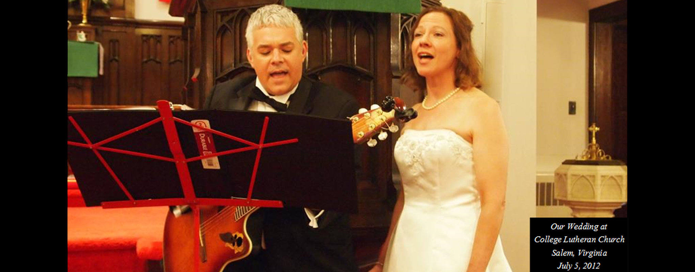

<template>
  <div class="page-content">
    <!-- The dimensions of the images are 950x300 -->
    <polymer-slideshow class="music-slideshow">
      <polymer-slide>
        <paper-card class="slideshowimage" image="../static/imgs/hiddenValleyTalentShow.png"></paper-card>
      </polymer-slide>
      <polymer-slide>
        <paper-card class="slideshowimage" image="../static/imgs/ourWedding.png"></paper-card>
      </polymer-slide>
      <polymer-slide>
        <paper-card class="slideshowimage" image="../static/imgs/prom2015.png"></paper-card>
      </polymer-slide>
    </polymer-slideshow>

    <!-- <div class="slideshow-container">
    <div class="mySlides fade">
    
  </div>
  <div class="mySlides fade">
  
</div>
<div class="mySlides fade">

</div>
</div> -->

<paper-material class="material-content" elevation="2">
  <p style="margin-top:40px;">Josh and Maria were married in July of 2012 and have been singing together
    for even longer. Whether it is at church, at the Rescue Mission, in a public venue or in the
    great outdoors, this couple will knock your socks off. Follow us on
    <span style="color: #3366ff;">
      <a style="color: #3366ff;" title="Find us on Facebook" href="https://www.facebook.com/pages/Josh-Sherman-Band/125614520857570" target="_blank">
        Facebook
      </a>
    </span>
    to keep up with our latest adventures!
  </p>
  <section id="main" style="text-align: center">
    <a click.delegate="jump('joshbio')">
      
    </a>
    <p>Josh Sherman – rhythm guitarist and baritone vocalist</p>
    <a click.delegate="jump('mariabio')">
      
    </a>
    <p>Maria Sherman – primo soprano and bass guitarist</p>
  </section><hr>
  <section style="margin-left:0;text-align:center;margin-top:40px">
    <h3 style="text-align:center; margin-bottom:30px">Who are these classy people?</h3>
    <h4>Josh Sherman</h4>
    <a id="joshbio">
      
    </a>
    <p style="text-align:left;">
      Josh began playing the trumpet when he was in third grade. He became skilled with the trumpet,
      continuing with his musical stylings through high school where he was first chair and regular
      soloist on the marching field. In college Josh studied music and picked up the guitar. He was
      primarily self-taught on the guitar, although he received help from his many musical relatives,
      especially his Uncle Mike. Josh went on to found several bands while living in central Florida.
      He recorded two cds and was played on the local radio stations. Josh also played in many
      venues including the Sun cruise casino ship and the Battle of the Bands. His career took a
      different turn when he moved to Virginia. Leaving his band behind, Josh played at the GE Pig
      roast several years and performed solo at Mill Mountain coffee shop and the 4th Street coffee
      shop. Josh started singing with Maria in the fall of 2011. They fell in love and were married
      in July of 2012. Vive l’amore!</p>
      <blockquote style="font-style: italic;text-align:left; margin-top:5px; font-size:9pt">
        <p>And whenever the harmful spirit from God was upon Saul, David took the lyre
          and played it with his hand. So Saul was refreshed and was well, and the harmful spirit
          departed from him. <strong>1 Samuel 16:23</strong></p></blockquote>
          <aside style="text-align:left; margin:auto; width:3in">
            <p>Instruments that Josh plays:</p>
            <ol>
              <li>Lead vocals</li>
              <li>Harmony vocals</li>
              <li>Acoustic guitar</li>
              <li>Electric guitar</li>
              <li>Harmonica</li>
              <li>Trumpet</li>
              <li>kazoo</li>
              <li>Air guitar</li>
            </ol>
          </aside>
          <hr>
          <article>
            <h4>Maria Sherman</h4>
            <p><a id="mariabio">
              
            </a></p>
            <p style="text-align:left">Maria started her singing career at the age of 4 when she performed at the JaMar Rec
              Center in St. Petersburg, Florida. Maria continued adding to her musical repertoire
              by learning piano, alto saxophone, tenor saxophone, bassoon, and marching tenors.
              She earned a minor in voice at Roanoke College and did a variety of chorus, musical theatre,
              and solo performances while teaching in the Roanoke County Schools. Although classically
              trained, Maria loves singing rock and Christian music with Josh, and hopes to add bass
              guitar to her list of instruments soon. Josh is the most wonderful husband and is the driving
              force for the couple; Maria is a fabulous wife and is the organization behind the duo.</p>
              <blockquote style="font-style: italic;text-align:left; margin-top:5px; font-size:9pt">
                <p>Whoever sings songs to a heavy heart is like one who takes off a garment on a cold
                  day, and like vinegar on soda.
                  <strong>Proverbs 25:20</strong>
                </p>
              </blockquote>
              <aside style="text-align:left; margin:auto; width:3in">
                <p>Instruments that Maria plays:</p>
                <ol>
                  <li>Bass guitar</li>
                  <li>Lead vocals</li>
                  <li>Harmony vocals</li>
                  <li>Tamborine</li>
                  <li>Keyboard</li>
                  <li>Cups</li>
                  <li>Saxophone</li>
                  <li>Egg shacker</li>
                  <li>Triangle</li>
                  <li>Tri-tom</li>
                </ol>
              </aside>
            </article>
          </section>
        </paper-material>

        <paper-material class="footer" elevation="4" style="padding:8px; background-color: #2a222a">
          <div class="paper-card-img"><span>&nbsp;&nbsp;</span>
            <a target="_blank" href="https://github.com/WebJamApps"><i class="fa fa-github fa-2x" aria-hidden="true"></i></a>
            <span>&nbsp;&nbsp;</span><a target="_blank" href="https://www.linkedin.com/company-beta/16257103"><i class="fa fa-linkedin fa-2x" aria-hidden="true"></i></a>
            <span>&nbsp;&nbsp;</span><a target="_blank" href="https://www.facebook.com/WebJamLLC/"><i class="fa fa-facebook-square fa-2x" aria-hidden="true"></i></a>
            <span>&nbsp;&nbsp;</span><a target="_blank" href="https://plus.google.com/u/1/109586499331294076292"><i class="fa fa-google-plus-square fa-2x" aria-hidden="true"></i></a>
            <span>&nbsp;&nbsp;</span><a target="_blank" href="https://twitter.com/WebJamLLC"><i class="fa fa-twitter fa-2x" aria-hidden="true"></i></a><br>
            <span style="color:white; font-size: 9pt; padding-left:18px;">Powered by
              <a target="_blank" style="color:white; font-size:9pt;font-weight: bold;" href="https://www.web-jam.com">Web Jam LLC</a>
            </span>
          </div>
        </paper-material>

      </div>
    </template>
